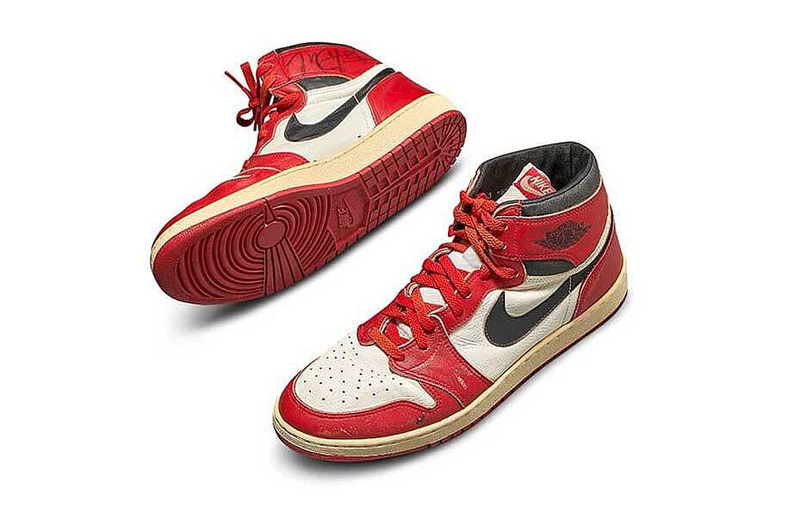
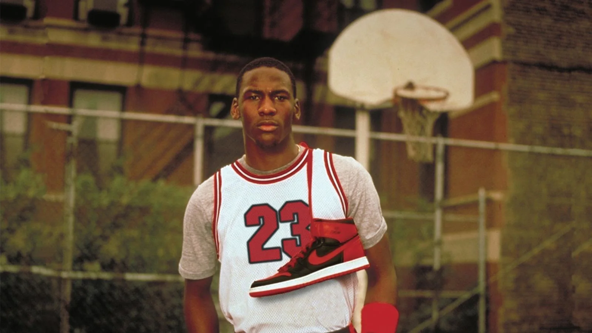

Récord de subasta: la millonaria cifra que pagaron por históricas zapatillas de Michael Jordan
Un par de zapatillas Nike de la leyenda del baloncesto Michael Jordan, firmadas y desgastadas, se ponen a subasta en Sotheby’s
“Creo que las Air Jordan 1 son las zapatillas más icónicas de todos los tiempos. Son tan reconocibles y evocan tanta nostalgia, que creo que les da un atractivo muy especial, el hecho de que estas zapatillas fueran usadas por Michael Jordan las lleva a otro nivel” dijo el vendedor y coleccionista Jordan Geller al comienzo de la venta.
Un par de zapatillas Air Jordan usadas en un juego por Michael Jordan se vendieron este domingo por 560.000 dólares en la casa de subastas Sotheby’s , un récord histórico para calzado de baloncesto. Las zapatillas blancas, negras y rojas, fabricadas para Jordan en 1985 y autografiadas por la leyenda de la NBA, destronaron a un par de “Moon Shoe”, que se vendió en julio de 2019 por 437.000 dólares , también en Sotheby’s.
El par de Air Jordan 1 dentro del esquema de color “Chicago”, el modelo más emblemático de su generación, superó fácilmente el estimado de preventa de Sotheby’s era de 100.000 a 150.000 dólares. Los Air Jordan 1 fueron el primer modelo creado especialmente por Nike para Michael Jordan. El jugador los usó en su primera temporada en la NBA.
A diferencia de los Air Jordan 1 , los “Moon Shoes” vendidos el año pasado nunca se habían usado. Antes de la venta del domingo, el récord de calzado deportivo usado por un atleta fue cuando el británico Roger Bannister se convirtió en la primera persona en correr una milla en menos de cuatro minutos en 1954 con ellas. Las mismas fueron compradas por 409.000 dólares por un coleccionista anónimo en 2015 en una subasta en Christie’s en Londres.